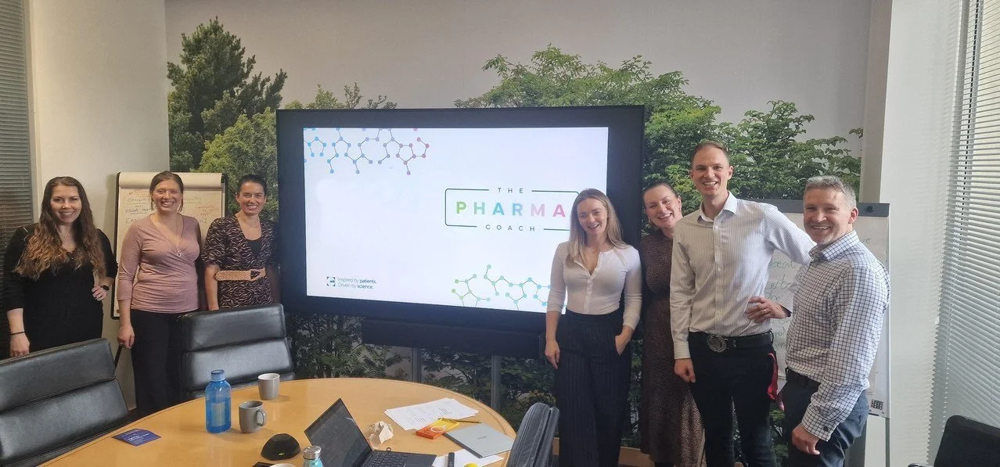
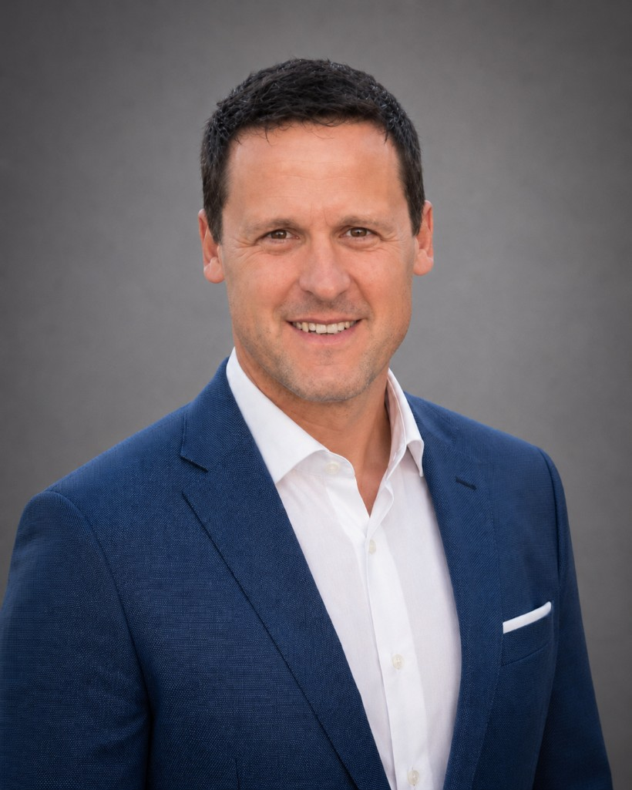

In pharma, leadership isn't personal ascent, it's propelling the whole team. We bring together clinical, commercial, intercultural and storytelling expertise so the work lands across every part of a complex organisation.

Our three pillars aren't abstractions. Each one is owned by people who've done the work at the sharp end, and who lead it for you.
A high-performance coach and consultant to pharma's most senior leaders, with a background spanning commercial leadership and behavioural science. He built Inscape on a simple conviction: the best leadership decisions start with evidence, not assumptions.
Coordinates our intelligence function and the logistics behind every engagement, keeping complex programmes moving. Exceptionally organised, with a background training executive assistants, she builds capability in the EAs who support our senior clients.
A biostatistician (MSc, Statistics with Medical Applications) who builds the proprietary diagnostics behind our work, turning complex findings into clarity a busy leader can act on.
Powers the Pharma Leaders newsletter community and the analytics behind it, turning engagement signals into intelligence the team can act on. An AI-fluent operator, he builds the tooling and experiments that keep our content sharp and our insight current.

35+ years across consultancy and healthcare, leading change at director level. A strengths facilitator who develops teams through honest conversation and challenge with compassion.
Decades of senior leadership and coaching, leading complex strategic change across healthcare and multiple geographies. Change that lands on time, and builds leadership while it does.
20+ years in communications and media across the UK, Australia and the USA. He shoots expert headshots and puts our clients on camera, creating the videos that communicate a team's impact, internally and out to stakeholders.
Reads the dynamics across cultures, with first-hand experience bridging European and Japanese business. She catches what's lost in translation before it derails a partnership.
20+ years in corporate HR leadership, including Head of People for a pharma data business. She treats resilience as a skill teams can build, and the strength that holds them together under pressure.
A registered nurse and qualified wellbeing coach who's supported healthcare and life-science professionals for over a decade, from A&E to a hospital ship. Rare insight into the real toll of leadership.
A certified health & life coach and functional-nutrition specialist (CHLC, CFNC, RHC/UKIHCA). Trauma-informed, she helps leaders rebuild the physical and mental foundations that performance is built on.
If the left column sounds like you, the next fifteen minutes are worth it. We take on a limited number of engagements each quarter, so every one stays senior-led.
Book a 15-minute conversation. We'll show you what evidence-led leadership could surface inside your team, and the plan to act on it. No pitch, no obligation.